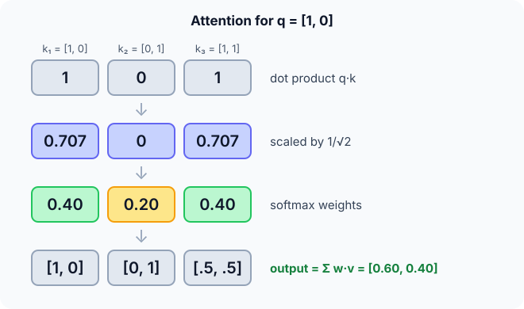

Prerequisites
The analogy
Everyday analogy
Think of searching a library. Your question is the query; each book's catalogue entry is a key; each book's content is a value. You compare your question with every entry, then read mostly from the books that match best.
Attention does exactly that with vectors: query–key similarity decides the weights, and the answer is a weighted blend of the values.
How it works
Formula: $\text{Attention}(Q, K, V) = \text{softmax}\big(QK^\top / \sqrt{d_k}\big)\,V$, where $d_k$ is the key dimension (here 2).
Start with one query by hand
$q = [1, 0]$; keys $k_1 = [1, 0]$, $k_2 = [0, 1]$, $k_3 = [1, 1]$; values $v_1 = [1, 0]$, $v_2 = [0, 1]$, $v_3 = [0.5, 0.5]$; $d_k = 2$. Predict, then open "Check".
Example: predict before you read
Step 1. Raw scores $q \cdot k_i$, then divide by $\sqrt{2} \approx 1.414$.
Check
Dot products 1, 0, 1; scaled 0.707, 0, 0.707.
Step 2. Cover the next line and guess: softmax of $[0.707, 0, 0.707]$ (use $e^{0.707} \approx 2.03$).
Check
Exponentials 2.03, 1, 2.03; sum 5.06; weights $\approx [0.401, 0.198, 0.401]$.
Step 3. Weighted sum of the values.
Check
$0.401 \cdot [1, 0] + 0.198 \cdot [0, 1] + 0.401 \cdot [0.5, 0.5] \approx [0.60, 0.40]$.

Quick recall: Before reading further, cover the text above and say out loud: what roles do the query, keys and values play?
Check your answer
The query says what we are looking for, keys are compared with it to get the weights, and values are what gets mixed into the output.
Finish the picture: a sharper query
Now the query is $q = [4, 0]$, pointing the same way but longer.
- Scaled scores. Predict them.
Check
$[4, 0, 4]/\sqrt{2} \approx [2.83, 0, 2.83]$.
- Weights and output. Predict them, and what changed.
Check
Softmax $\approx [0.49, 0.03, 0.49]$; output $\approx [0.73, 0.27]$. Larger scores make attention more focused, ignoring $k_2$ almost entirely.
Quick recall: Without scrolling up, say out loud: why scale the scores by $1/\sqrt{d_k}$?
Check your answer
Dot products grow with the dimension; without scaling, softmax becomes extremely peaked and its gradients tiny.
Full worked calculation
Full self-attention over three tokens. Each token's query and key are the vectors from the page, $[1, 0]$, $[0, 1]$, $[1, 1]$, and their values are $[1, 0]$, $[0, 1]$, $[0.5, 0.5]$. Every token attends to every token, so we compute a whole 3 × 3 table of weights.
| Query | Scores $q\cdot k_j/\sqrt 2$ | Weights (softmax) | Output |
|---|---|---|---|
| token 1 [1, 0] | 0.707, 0, 0.707 | 0.401, 0.198, 0.401 | [0.602, 0.398] |
| token 2 [0, 1] | 0, 0.707, 0.707 | 0.198, 0.401, 0.401 | [0.398, 0.602] |
| token 3 [1, 1] | 0.707, 0.707, 1.414 | 0.248, 0.248, 0.504 | [0.5, 0.5] |
-
1Dot products (similarity)
$$q_1 \cdot k_1 = 1, \quad q_1 \cdot k_2 = 0, \quad q_1 \cdot k_3 = 1 \cdot 1 + 0 \cdot 1 = 1$$A dot product is large when two vectors point the same way. Token 1 matches itself and token 3 equally, and not token 2 at all.
-
2Scale by √d
$$\frac{[1, 0, 1]}{\sqrt 2} = [0.707,\; 0,\; 0.707]$$With $d$-dimensional vectors, dot products grow like $\sqrt d$. Dividing keeps the scores in a range where softmax is not saturated, so gradients stay useful.
-
3Softmax into weights
$$e^{[0.707, 0, 0.707]} = [2.028,\; 1,\; 2.028], \quad \sum = 5.056 \;\Rightarrow\; [0.401,\; 0.198,\; 0.401]$$The weights are positive and sum to 1. Even the non-matching token 2 gets some attention (0.198), because softmax never gives exactly 0.
-
4Weighted sum of the values
$$o_1 = 0.401 \cdot [1, 0] + 0.198 \cdot [0, 1] + 0.401 \cdot [0.5, 0.5] = [0.602,\; 0.398]$$The output is a blend of the value vectors, mostly from the tokens that matched. Token 1's new representation now contains information from token 3.
-
5Token 3: matches both
$$\text{scores } [0.707, 0.707, 1.414] \;\Rightarrow\; [0.248, 0.248, 0.504], \quad o_3 = [0.5, 0.5]$$Token 3's query $[1, 1]$ is most similar to its own key, so it keeps half its attention for itself and splits the rest evenly.
-
6All at once in matrix form
$$\text{Attention}(Q, K, V) = \text{softmax}\!\left(\frac{Q K^\top}{\sqrt{d}}\right) V$$$QK^\top$ is the 3 × 3 score table, softmax is applied row by row, and multiplying by $V$ gives all three outputs. This is three matrix products: fast on a GPU, and every token sees every other token in a single step.
What the numbers tell us
Each token asks a question (query), compares it with every key, turns the scores into weights with a scaled softmax, and takes the weighted mix of the values.
The cost is a score for every pair of tokens: $n^2$ for $n$ tokens, which is why very long inputs are expensive.
The rule in plain words
For each query: score every key with a scaled dot product, turn the scores into weights with softmax, and output the weighted sum of the values.
In self-attention, queries, keys and values all come from the same sequence, via three learned projections of each token.
Quick recall: Before you read the code, describe attention for one query in your own words. Then check below.
Check your answer
Dot the query with each key and divide by $\sqrt{d}$, softmax the scores into weights, then add up the values weighted by those weights.
The code
Read this code after you have computed the attention weights by hand. It will make more sense.
void attend(double q[], double K[][2], double V[][2], int n, int d, double out[]) {
double w[16]; /* softmax numerators */
double sum = 0;
for (int i = 0; i < n; i++) {
double s = 0;
for (int j = 0; j < d; j++) s += q[j] * K[i][j]; /* query · key */
w[i] = exp(s / sqrt(d)); /* scaled, unnormalised */
sum += w[i];
}
for (int j = 0; j < d; j++) {
out[j] = 0;
for (int i = 0; i < n; i++) out[j] += w[i] / sum * V[i][j]; /* softmax-weighted values */
}
}Definition
What you just did, in one line: attention computes an output as a weighted average of value vectors, where the weights are the softmax of scaled dot products between a query and the keys: $\text{softmax}(QK^\top/\sqrt{d_k})V$.
flowchart LR
Q["query q"] --> S["scores q·k / √d"]
K["keys k1..kn"] --> S
S --> SM["softmax → weights"]
SM --> O["output = Σ weight × value"]
V["values v1..vn"] --> O
How costly is it?
Quick recall: Before looking at the formula, predict: in self-attention over $n$ tokens, how many query–key scores are computed?
Check your answer
$n^2$: every token attends to every token.
Scaled dot-product attention for $n$ queries and keys of dimension $d$:
$$\text{Attention}(Q, K, V) = \text{softmax}\!\left(\frac{QK^\top}{\sqrt{d_k}}\right)V, \qquad \text{cost } O(n^2 d), \text{ memory } O(n^2)$$| Quantity | Our example | In general |
|---|---|---|
| Scores computed | 3 (one query) | $n^2$ for self-attention |
| Weights | [0.40, 0.20, 0.40] | softmax over each row |
| Output | [0.60, 0.40] | one vector per query |
| Path between any two positions | 1 step | 1 step (an RNN needs up to $n$) |
Warning
Attention cost grows with the square of the sequence length: doubling a document's length quadruples the work and memory. That is why long-context models need special tricks (sparse or linear attention, memory-efficient kernels).
Exam tip
Follow the four steps with numbers: dot products, scale by $\sqrt{d_k}$, softmax, weighted sum of values. Then name Q, K, V and say where they come from in self-attention (three learned projections of the same tokens).
Common mistakes
- Forgetting the $\sqrt{d_k}$ scaling.
- Mixing values and keys: weights come from keys, the output is built from values.
- Applying softmax over the wrong axis (it must normalise over the keys for each query).
Try it yourself
Exercise 1 (warm-up)
With the same keys and values, compute the attention weights for $q = [0, 1]$.
Hint
Dot products are 0, 1, 1.
Answer
Scaled $[0, 0.707, 0.707]$; weights $\approx [0.198, 0.401, 0.401]$.
Exercise 2 (a bit harder)
Self-attention over a 1,000-token text versus a 4,000-token text: how many times more query–key scores are needed? Write your answer down before you open it.
Show answer
$4{,}000^2 / 1{,}000^2 = 16$ times more: 16 million versus 1 million scores per head.
Did you know?
Did you know?
Bahdanau, Cho and Bengio introduced attention in 2014 to help translation RNNs look back at the source sentence; "Attention Is All You Need" (2017) then dropped the RNN entirely.
Visualising attention weights shows, for instance, a pronoun like "it" attending strongly to the noun it refers to.
Key points to remember
If you remember one thing from each line, remember the because.
- Attention focuses on matching items because softmax turns higher query–key similarity into larger weights.
- The output is a blend of values because it is their weighted average.
- Scores are scaled by $\sqrt{d_k}$ because raw dot products grow with dimension and would saturate softmax.
- Any two positions are one step apart because every query looks at every key directly.
- Cost grows as $n^2$ because every token is compared with every other token.
Self-check questions
Answer these in order, out loud. They follow the page, so your answers become the script of your video.
- How is attention like searching a library?
Sample answer
Your question (query) is compared with each catalogue entry (key), and you read mostly from the matching books (values).
- Compute attention for $q = [1, 0]$ with the three keys and values of the example.
Sample answer
Scaled scores [0.71, 0, 0.71], weights [0.40, 0.20, 0.40], output about [0.60, 0.40].
- Why does the code divide each
w[i]bysumwhen mixing the values?A good answer mentions softmax.
Sample answer
The exponentials are softmax's numerators; dividing by their sum makes the weights add up to 1, so the output is a weighted average.
- So what is attention, in one sentence?
Sample answer
A weighted average of value vectors, with weights given by the softmax of scaled query–key dot products.
- Why did the longer query $[4, 0]$ make attention more focused?
A good answer mentions softmax and larger scores.
Sample answer
Larger scores make the softmax more peaked: the gap between matching and non-matching keys grows, so the weight on $k_2$ nearly vanishes.
- What do self-attention's cost and memory grow with?
Sample answer
The square of the sequence length: $O(n^2 d)$ time and $O(n^2)$ memory.
- What advantage does attention have over an RNN for long-range dependencies?
Sample answer
Any two positions interact in one step, instead of passing information through many recurrent steps where it can fade.
- If you had to teach this to a friend in 2 minutes, what would you leave out, and why?
Sample answer
I'd leave out the cost analysis and the sharper-query example. I'd keep the library analogy, the four steps on $q = [1, 0]$, and "softmax of $QK^\top/\sqrt{d}$, times $V$".
External resources
- Jay Alammar: The Illustrated Transformer: self-attention with step-by-step pictures.
- Vaswani et al.: Attention Is All You Need (arXiv): the original Transformer paper.
- PyTorch docs: scaled_dot_product_attention: the formula as implemented.
Videos
- 3Blue1Brown: Attention in transformers, visually explained: queries, keys and values in pictures.